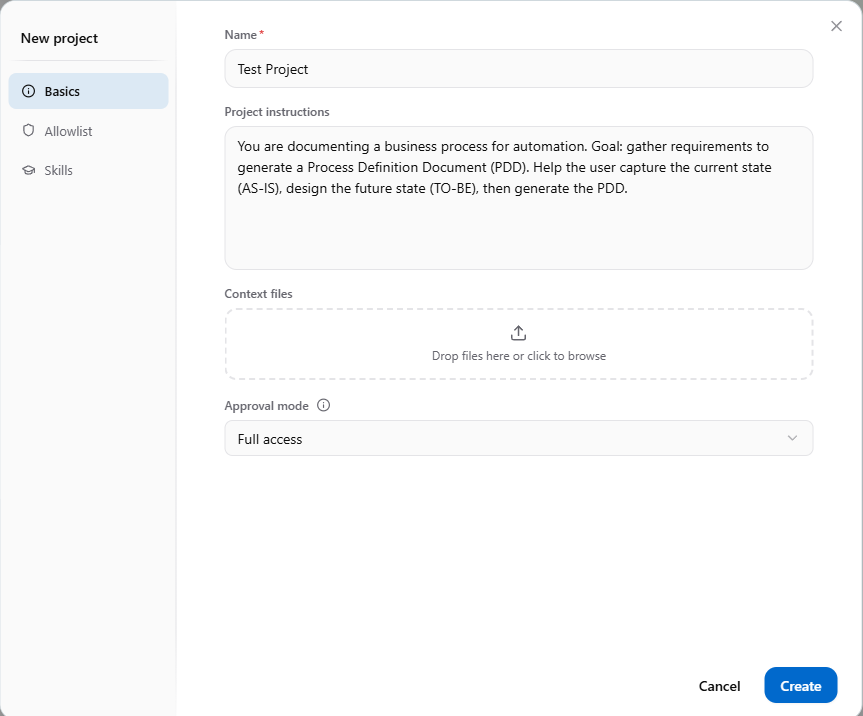
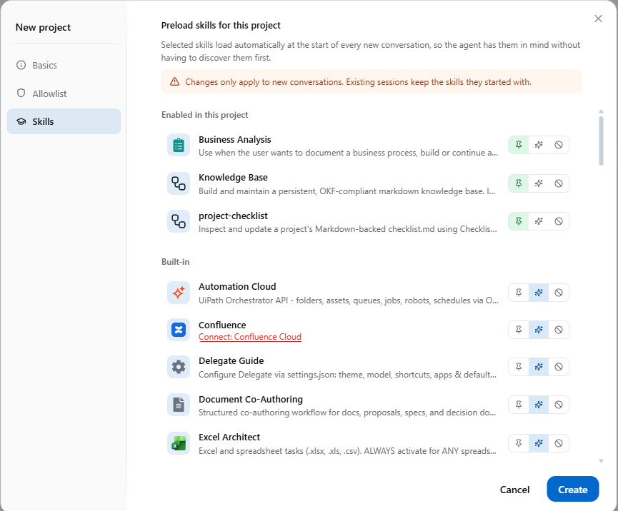
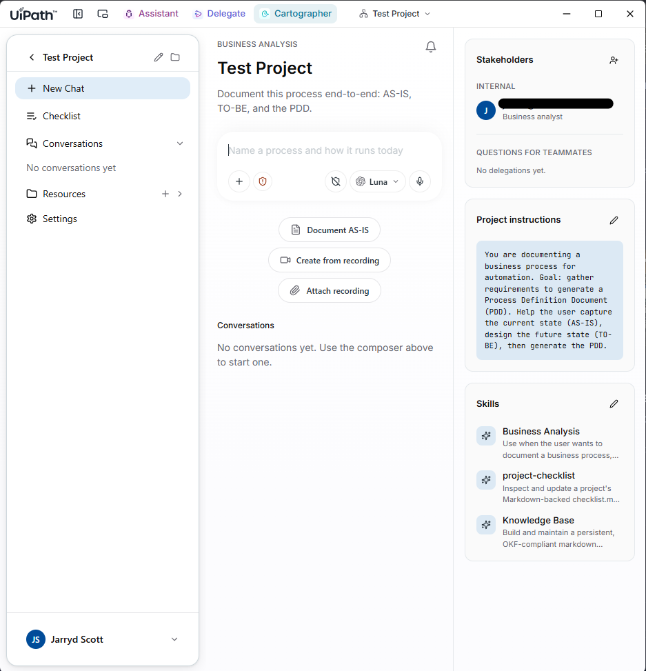

UiPath Delegate & Cartographer
One agent does the work on your desktop. The other writes down how the work actually runs — exceptions and judgment calls included. No CLI here: Cartographer lives inside the UiPath desktop app, and you build a project by hand. Here's every setting, screen by screen.
Two products, one app
Both went generally available at FUSION 2026. They install alongside UiPath Assistant and you move between the three from the switcher in the title bar. Cartographer is built on Delegate, but they answer different questions.
-
Acts
UiPath Delegate
A desktop agent that does the work you'd otherwise do by hand. You describe the task in plain language and it drives your apps, documents and business systems, under your organisation's existing controls.
- input · a plain-language ask or a recording
- output · the task, done, or a reusable routine
- best for · repetitive personal desktop work
-
Maps
UiPath Cartographer
An AI agent for business analysts. It turns transcripts, interviews, SOPs and recordings into governed process documentation: a PDD, then an SDD once the PDD is approved.
- input · SOPs, recordings, SME interviews
- output · AS-IS / TO-BE, PDD, SDD
- best for · processes you're about to automate
Setup 1 · Project basics
In Cartographer, start a new business process. The New project dialog has three tabs down the left: Basics, Allowlist and Skills. Basics is the only one you must fill in. Click a number to see what each field does.

-
A stronger project brief
copy & adaptThe default instructions work. Being specific about scope and sources gets you a sharper first draft and fewer clarifying questions.
Project instructionsYou are documenting a business process for automation.Goal: capture the AS-IS, design the TO-BE, generate the PDD.Scope: AP invoice exceptions only, from receipt to posting in SAP.Treat the attached SOP as intent, not truth. Flag everyplace where the recordings disagree with it.Audience: CoE solution architects. Use our system names.AllowlistThe Allowlist tab lists the local files and folders Cartographer may use when Guarded mode is on, plus linked project resources that stay in sync with their source. Point it at the process's folder and nothing else.
Setup 2 · Preload skills
Skills are packaged know-how the agent can draw on. This tab decides which ones are already loaded when a conversation starts, so the agent doesn't have to discover them first. Changes only apply to new conversations: a session keeps the skills it started with.

The project home
Click Create and you land on the project's home page. It has three columns: navigation on the left, the conversation in the middle, and the project's standing context on the right.

Your first session
Everything from here on is conversation. These are the prompts I'd actually type, in order.
-
Open with the AS-IS
~15 minClick Document AS-IS, or just describe the process. Cartographer interviews you step by step and asks about triggers, systems, volumes and the exceptions nobody wrote down.
Cartographer — promptAP invoice exceptions. Invoices that fail 3-way match landin the AP mailbox; an analyst checks SAP, emails the buyer,and posts or rejects. ~400 a month, one analyst covers it.Beginner tipAnswer with what really happens, not what the SOP says. The contradictions between the two are what the documentation is for.
-
Feed it a recording
~10 minUse Create from recording to capture one real run, or attach an existing recording. Cartographer turns what it sees into confirmed steps on the AS-IS map.
Cartographer — promptHere's a recording of me handling one price-varianceexception end to end. Update the AS-IS and list anythingthat contradicts the attached SOP. -
Design the TO-BE
~15 minCartographer goes through the steps one by one and asks how each will be handled: Fully Automated, Assisted, Agent, Human Review or Manual. It then draws a future-state map colour-coded by mode. Confirming that map is a mandatory checkpoint.
Cartographer — promptMove to TO-BE. Mark anything you're unsure of as Manualand provisional. Approvals over the threshold are Human Review.Conservative defaultIf you're unsure about a step, choose Manual and mark it provisional. You can change any mode before or after the PDD is generated.
-
Generate the PDD, then the SDD
~10 minOnce the TO-BE is confirmed, Cartographer generates the PDD and works through the quality checklist with you. When the PDD is approved, it produces the SDD for the build team and their coding agents.
Cartographer — promptGenerate the PDD. Then walk me through every open itemon the checklist before we produce the SDD.HandoffFrom the SDD you can send everything to Automation Hub, and that's where the uip CLI and coding agents from Episodes 1 and 2 take over.
Where it breaks
Go in with eyes open on three things. First, the output is only as good as the interview. Cartographer drafts, but it never approves, so a rushed AS-IS gives you a confident, wrong PDD. Second, Full access approval mode on a real project is a governance conversation, not a personal preference. Your admin can enforce limits through Automation Ops policies. Third, licensing: ask your account team in writing what Delegate and Cartographer sessions consume.
Watch the episode
Prefer audio? Follow on Spotify